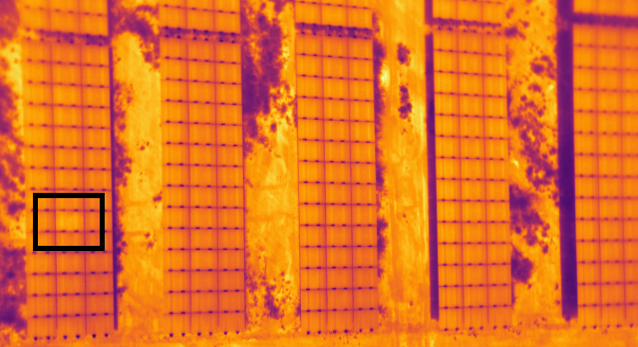
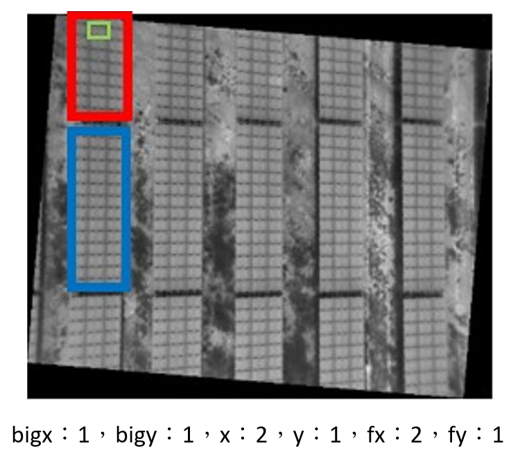

太陽能光電模組異常偵測
太陽能光電模組專題報告
2024專題
實際操作
參考文獻
異常質檢測
模型簡介
變數介紹
摘要
首頁
摘要
隨著現代社會「能源」需求的增加 ，特別是台灣太陽光發電在再生能源中最具代表。從2017年到2021年，台灣的太陽光發電量增長了15倍以上，凸顯了其在能源市場的重要性。在這樣的背景下，太陽光電模組的維護成為 關鍵，尤其是解決「熱斑效應」的問題。熱斑是指太陽光照射之下，發電異常而產生高溫，因此在紅外線熱影像之下，其亮度會變高（如下圖的紅框），常由外部因素，如：灰塵、雨水 遮擋，或是內部因素，如：焊接不良。此問題不止影響發電效率也可能造成安全隱患。過去，使用直升機或人工檢查是常見的維護方法，但這些方法既耗時又危險。因此，開發一種有效 且安全的「監測方法」用以進行維護，成為太陽光電發展的重要技術挑戰。

變數介紹
local：大圖片編號(共1~1009，已刪除184:原圖過暗、956:資料太少，不足分析)
bigx：整張圖片有擷取的大片太陽能板x軸排序編號
bigx：整張圖片有擷取的大片太陽能板x軸排序編號
bigy：整張圖片有擷取的大片太陽能板y軸排序編號
x：每片太陽能板擷取的小格太陽能板以x軸排序編號
y：每片太陽能板擷取的小格太陽能板以y軸排序編號
light：每一小格的平均亮度
fx：由bigx、x所組成的變數
fy：由bigy、y所組成的變數
label：是否壞掉(0：正常，1：異常)
fxx: fx的平方項 fyy: fy的平方項 fxy: fx*fy項

模型簡介
(一) 迴歸分析(Regression analysis):
使用迴歸分析建立模型是最常見的統計分析方法。本專題預期使用3個解釋變數建立具有區集(照片編號)的多元迴歸模型。若線性迴歸模型解釋能力不佳，將進行變數轉換，以增進模型的解釋能力。
(二) XGBoost(Extreme Gradient Boosting):
是以 Gradient Boosting 為基礎再加上特徵隨機採樣等技巧，其主要思路是將多個決策樹組合而成的模型，屬於一種高度複雜演算法且準確率高的模型。
(三) 移動平均(Moving Average)：
透過整個數據集裡不同樣本的一系列平均數來分析數據點的計算方法，可看趨勢或者是差異性。[
1~4
]
(四) 類神經網路(artificial neural network, ANNs)：
是一種模仿生物內的中樞神經系統結構的數學模型，由大量的神經元連結進行運算，主要是以接收外部的訊息來變更內部的結構，以此來建立複雜的非線性關係模型。
異常質檢測
[
5
]
(一) LOF局部離群因子(Local Outlier Factor):
LOF評估每個數據點相對於其周圍鄰近數據點的密度。一個正常的數據點應該被其鄰近的點包圍，而異常值則可能位於密度較低的區域。LOF通過比較每個數據點的局部密度與其鄰近點的局部密度，來識別潛在的異常值。
(二) k-平均演算法(K-means)：
非監督式學習的分群演算法，通常在資料分佈常態時效果較好。隨機取k個點作為起始點，計算每個資料與起始點距離的平方最小的做為分組，然後以每個分組的中心（平均）為新的起始點後不斷的重複計算，直到收斂後得到最後的分組。[
6~9
]
(三) 統計離群值(Outlier)：
與其他數據有顯著差異，稱為離群值，利用Q1與Q3所計算出IQR，大於Q3+1.5*IQR或小於Q1-1.5*IQR的數據。[
10
]
參考文獻
https://zh.wikipedia.org/zh-tw/%E7%A7%BB%E5%8B%95%E5%B9%B3%E5%9D%87
(維基百科:移動平均概念)
https://www.ig.com/en/glossary-trading-terms/moving-average-definition
(MA定義)
https://www.investopedia.com/terms/m/movingaverage.asp
(MA使用實例參考)
https://fxlittw.com/what-is-moving-average
(移動平均線MA:指標介紹)
https://zh.wikipedia.org/zh-tw/%E5%BC%82%E5%B8%B8%E5%80%BC
(維基百科:異常值概念)
https://neptune.ai/blog/k-means-clustering
(k-means分群:程式碼參考&概念)
https://ithelp.ithome.com.tw/articles/10209058
(k-means分群演算法:程式碼參考)
https://rstudio-pubs-static.s3.amazonaws.com/378455_ddbefe5075b941d1a1f6a1bf9cf1e85f.html
(k-means在R使用:模型程式碼參考)
https://chih-sheng-huang821.medium.com/%E6%A9%9F%E5%99%A8%E5%AD%B8%E7%BF%92-%E9%9B%86%E7%BE%A4%E5%88%86%E6%9E%90-k-means-clustering-e608a7fe1b43
(k-means集群分析:概念圖解)
https://www.gss.com.tw/blog/%E9%9B%A2%E7%BE%A4%E5%80%BC%E4%B9%8B%E7%B0%A1%E4%BB%8B
(離群值簡介)
進入實際操作
 2024專題
實際操作
參考文獻
異常質檢測
模型簡介
變數介紹
摘要
首頁
2024專題
實際操作
參考文獻
異常質檢測
模型簡介
變數介紹
摘要
首頁